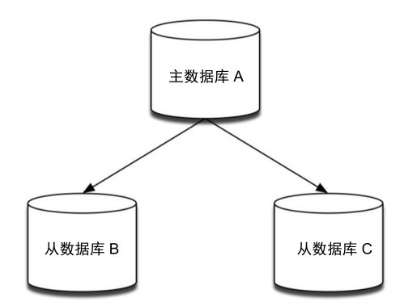
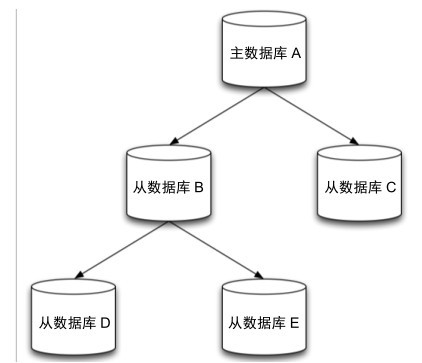

8.1 复制
通过持久化功能，Redis保证了即使在服务器重启的情况下也不会损失（或少量损失）数据。但是由于数据是存储在一台服务器上的，如果这台服务器出现硬盘故障等问题，也会导致数据丢失。为了避免单点故障，通常的做法是将数据库复制多个副本以部署在不同的服务器上，这样即使有一台服务器出现故障，其他服务器依然可以继续提供服务。为此， Redis 提供了复制（replication）功能，可以实现当一台数据库中的数据更新后，自动将更新的数据同步到其他数据库上。
在复制的概念中，数据库分为两类，一类是主数据库（master），另一类是从数据库[1] （slave）。主数据库可以进行读写操作，当写操作导致数据变化时会自动将数据同步给从数据库。而从数据库一般是只读的，并接受主数据库同步过来的数据。一个主数据库可以拥有多个从数据库，而一个从数据库只能拥有一个主数据库，如图8-1所示。

图8-1 一个主数据库可以拥有多个从数据库
在 Redis 中使用复制功能非常容易，只需要在从数据库的配置文件中加入“slaveof 主数据库地址 主数据库端口”即可，主数据库无需进行任何配置。
为了能够更直观地展示复制的流程，下面将实现一个最简化的复制系统。我们要在一台服务器上启动两个 Redis 实例，监听不同端口，其中一个作为主数据库，另一个作为从数据库。首先我们不加任何参数来启动一个Redis实例作为主数据库：
$ redis-server
该实例默认监听6379端口。然后加上slaveof参数启动另一个Redis实例作为从数据库，并让其监听6380端口：
$ redis-server --port 6380 --slaveof 127.0.0.1 6379
此时在主数据库中的任何数据变化都会自动地同步到从数据库中。我们打开 redis-cli实例A并连接到主数据库：
$ redis-cli -p 6379
再打开redis-cli实例B并连接到从数据库：
$ redis-cli -p 6380
这时我们使用INFO命令来分别在实例A和实例B中获取Replication节的相关信息：
redis A> INFO replication
role:master
connected_slaves:1
slave0:ip=127.0.0.1,port=6380,state=online,offset=1,lag=1
master_repl_offset:1
可以看到，实例A的角色（上面输出中的role）是master，即主数据库，同时已连接的从数据库（上面输出中的connected_slaves）的个数为1。
同样在实例B中获取相应的信息为：
redis B> INFO replication
role:slave
master_host:127.0.0.1
master_port:6379
这里可以看到，实例 B 的 role 是 slave，即从数据库，同时其主数据库的地址为127.0.0.1，端口为 6379。
在实例A中使用SET命令设置一个键的值：
redis A> SET foo bar
OK
此时在实例B中就可以获得该值了：
redis B> GET foo
"bar"
默认情况下，从数据库是只读的，如果直接修改从数据库的数据会出现错误：
redis B> SET foo hi
(error) READONLY You can't write against a read only slave.
可以通过设置从数据库的配置文件中的 slave-read-only 为 no 以使从数据库可写，但是因为对从数据库的任何更改都不会同步给任何其他数据库，并且一旦主数据库中更新了对应的数据就会覆盖从数据库中的改动，所以通常的场景下不应该设置从数据库可写，以免导致易被忽略的潜在应用逻辑错误。
配置多台从数据库的方法也一样，在所有的从数据库的配置文件中都加上 slaveof参数指向同一个主数据库即可。
除了通过配置文件或命令行参数设置 slaveof参数，还可以在运行时使用 SLAVEOF命令修改：
redis> SLAVEOF 127.0.0.1 6379
如果该数据库已经是其他主数据库的从数据库了，SLAVEOF命令会停止和原来数据库的同步转而和新数据库同步。此外对于从数据库来说，还可以使用 SLAVEOF NO ONE命令来使当前数据库停止接收其他数据库的同步并转换成为主数据库。
了解 Redis 复制的原理对日后运维有很大的帮助，包括如何规划节点，如何处理节点故障等。下面将详细介绍Redis实现复制的过程。
当一个从数据库启动后，会向主数据库发送 SYNC 命令。同时主数据库接收到 SYNC命令后会开始在后台保存快照（即RDB持久化的过程），并将保存快照期间接收到的命令缓存起来。当快照完成后，Redis会将快照文件和所有缓存的命令发送给从数据库。从数据库收到后，会载入快照文件并执行收到的缓存的命令。以上过程称为复制初始化。复制初始化结束后，主数据库每当收到写命令时就会将命令同步给从数据库，从而保证主从数据库数据一致。
当主从数据库之间的连接断开重连后，Redis 2.6以及之前的版本会重新进行复制初始化（即主数据库重新保存快照并传送给从数据库），即使从数据库可以仅有几条命令没有收到，主数据库也必须要将数据库里的所有数据重新传送给从数据库。这使得主从数据库断线重连后的数据恢复过程效率很低下，在网络环境不好的时候这一问题尤其明显。Redis 2.8版的一个重要改进就是断线重连能够支持有条件的增量数据传输，当从数据库重新连接上主数据库后，主数据库只需要将断线期间执行的命令传送给从数据库，从而大大提高Redis复制的实用性。8.1.7节会详细介绍增量复制的实现原理以及应用条件。
下面将从具体协议角度详细介绍复制初始化的过程。由于Redis服务器使用TCP协议通信，所以我们可以使用 telnet 工具伪装成一个从数据库来与主数据库通信。首先在命令行中连接主数据库（默认端口为6379，假设目前没有任何从数据库连接）：
$ telnet 127.0.0.1 6379
Trying 127.0.0.1...
Connected to localhost.
Escape character is '^]'.
然后作为从数据库，我们先要发送PING命令确认主数据库是否可以连接：
PING
+PONG
主数据库会回复+PONG。如果没有收到主数据库的回复，则向用户提示错误。如果主数据库需要密码才能连接，我们还要发送AUTH命令进行验证（关于Redis的安全设置会在9.1节介绍）。而后向主数据库发送REPLCONF命令说明自己的端口号（这里随便选择了一个）：
REPLCONF listening-port 6381
+OK
这时就可以开始同步的过程了：向主数据库发送SYNC[2] 命令开始同步，此时主数据库发送回快照文件和缓存的命令。目前主数据库中只有一个foo键，所以收到的内容如下（快照文件是二进制格式，从第三行开始）：
SYNC
$29
REDIS0006?foobar?6_?"
从数据库会将收到的内容写入到硬盘上的临时文件中，当写入完成后从数据库会用该临时文件替换RDB快照文件（RDB 快照文件的位置就是持久化时配置的位置，由 dir 和dbfilename两个参数确定），之后的操作就和RDB持久化时启动恢复的过程一样了。需要注意的是在同步的过程中从数据库并不会阻塞，而是可以继续处理客户端发来的命令。默认情况下，从数据库会用同步前的数据对命令进行响应。可以配置 slave-serve-stale-data参数为no来使从数据库在同步完成前对所有命令（除了INFO和SLAVEOF）都回复错误：“SYNC with master in progress. ”
复制初始化阶段结束后，主数据库执行的任何会导致数据变化的命令都会异步地传送给从数据库，这一过程为复制同步阶段。同步的内容和Redis通信协议（会在9.2节介绍）一样，比如我们在主数据库中执行 SET foo hi，通过telnet我们收到了：
*3
$3
set
$3
foo
$2
hi
复制同步阶段会贯穿整个主从同步过程的始终，直到主从关系终止为止。
在复制的过程中，快照无论在主数据库还是从数据库中都起了很大的作用，只要执行复制就会进行快照，即使我们关闭了RDB方式的持久化（通过删除所有save参数）。Redis 2.8.18 之后支持了无硬盘复制，会在 8.1.6 节介绍。
乐观复制 Redis采用了乐观复制（optimistic replication）的复制策略，容忍在一定时间内主从数据库的内容是不同的，但是两者的数据会最终同步。具体来说，Redis在主从数据库之间复制数据的过程本身是异步的，这意味着，主数据库执行完客户端请求的命令后会立即将命令在主数据库的执行结果返回给客户端，并异步地将命令同步给从数据库，而不会等待从数据库接收到该命令后再返回给客户端。这一特性保证了启用复制后主数据库的性能不会受到影响，但另一方面也会产生一个主从数据库数据不一致的时间窗口，当主数据库执行了一条写命令后，主数据库的数据已经发生的变动，然而在主数据库将该命令传送给从数据库之前，如果两个数据库之间的网络连接断开了，此时二者之间的数据就会是不一致的。从这个角度来看，主数据库是无法得知某个命令最终同步给了多少个从数据库的，不过 Redis 提供了两个配臵选项来限制只有当数据至少同步给指定数量的从数据库时，主数据库才是可写的：
min-slaves-to-write 3
min-slaves-max-lag 10
上面的配臵中，min-slaves-to-write表示只有当3个或3个以上的从数据库连接到主数据库时，主数据库才是可写的，否则会返回错误，例如：
redis> SET foo bar
(error) NOREPLICAS Not enough good slaves to write.
min-slaves-max-lag 表示允许从数据库最长失去连接的时间，如果从数据库最后与主数据库联系（即发送 REPLCONF ACK命令）的时间小于这个值，则认为从数据库还在保持与主数据库的连接。举个例子，按上面的配臵，主数据库假设与3个从数据库相连，其中一个从数据库上一次与主数据库联系是 9 秒前，这时主数据库可以正常接受写入，一旦1秒过后这台从数据库依旧没有活动，则主数据库则认为目前连接的从数据库只有2个，从而拒绝写入。这一特性默认是关闭的，在分布式系统中，打开并合理配臵该选项后可以降低主从架构中因为网络分区导致的数据不一致的问题。具体8.2节还会介绍。
从数据库不仅可以接收主数据库的同步数据，自己也可以同时作为主数据库存在，形成类似图的结构，如图8-2所示，数据库A的数据会同步到B和C中，而B中的数据会同步到D和E中。向B中写入数据不会同步到A或C中，只会同步到D和E中。

图8-2 从数据库也可拥有从数据库
通过复制可以实现读写分离，以提高服务器的负载能力。在常见的场景中（如电子商务网站），读的频率大于写，当单机的Redis无法应付大量的读请求时（尤其是较耗资源的请求，如 SORT 命令等）可以通过复制功能建立多个从数据库节点，主数据库只进行写操作，而从数据库负责读操作。这种一主多从的结构很适合读多写少的场景，而当单个的主数据库不能够满足需求时，就需要使用Redis 3.0 推出的集群功能，8.3节会详细介绍。
另一个相对耗时的操作是持久化，为了提高性能，可以通过复制功能建立一个（或若干个）从数据库，并在从数据库中启用持久化，同时在主数据库禁用持久化。当从数据库崩溃重启后主数据库会自动将数据同步过来，所以无需担心数据丢失。
然而当主数据库崩溃时，情况就稍显复杂了。手工通过从数据库数据恢复主数据库数据时，需要严格按照以下两步进行。
（1）在从数据库中使用 SLAVEOF NO ONE命令将从数据库提升成主数据库继续服务。
（2）启动之前崩溃的主数据库，然后使用SLAVEOF命令将其设置成新的主数据库的从数据库，即可将数据同步回来。
注意 当开启复制且主数据库关闭持久化功能时，一定不要使用 Supervisor 以及类似的进程管理工具令主数据库崩溃后自动重启。同样当主数据库所在的服务器因故关闭时，也要避免直接重新启动。这是因为当主数据库重新启动后，因为没有开启持久化功能，所以数据库中所有数据都被清空，这时从数据库依然会从主数据库中接收数据，使得所有从数据库也被清空，导致从数据库的持久化失去意义。
无论哪种情况，手工维护从数据库或主数据库的重启以及数据恢复都相对麻烦，好在Redis提供了一种自动化方案哨兵来实现这一过程，避免了手工维护的麻烦和容易出错的问题，8.2节会详细介绍哨兵。
8.1.2节介绍Redis复制的工作原理时介绍了复制是基于RDB方式的持久化实现的，即主数据库端在后台保存 RDB 快照，从数据库端则接收并载入快照文件。这样的实现优点是可以显著地简化逻辑，复用已有的代码，但是缺点也很明显。
（1）当主数据库禁用RDB快照时（即删除了所有的配置文件中的save语句），如果执行了复制初始化操作，Redis依然会生成RDB快照，所以下次启动后主数据库会以该快照恢复数据。因为复制发生的时间不能确定，这使得恢复的数据可能是任何时间点的。
（2）因为复制初始化时需要在硬盘中创建RDB快照文件，所以如果硬盘性能很慢（如网络硬盘）时这一过程会对性能产生影响。举例来说，当使用 Redis 做缓存系统时，因为不需要持久化，所以服务器的硬盘读写速度可能较差。但是当该缓存系统使用一主多从的集群架构时，每次和从数据库同步，Redis都会执行一次快照，同时对硬盘进行读写，导致性能降低。
因此从2.8.18版本开始，Redis引入了无硬盘复制选项，开启该选项时，Redis在与从数据库进行复制初始化时将不会将快照内容存储到硬盘上，而是直接通过网络发送给从数据库，避免了硬盘的性能瓶颈。
目前无硬盘复制的功能还在试验阶段，可以在配置文件中使用如下配置来开启该功能：
repl-diskless-sync yes
8.1.2节在介绍复制的原理时提到当主从数据库连接断开后，从数据库会发送SYNC命令来重新进行一次完整复制操作。这样即使断开期间数据库的变化很小（甚至没有），也需要将数据库中的所有数据重新快照并传送一次。在正常的网络应用环境中，这种实现方式显然不太理想。Redis 2.8版相对2.6版的最重要的更新之一就是实现了主从断线重连的情况下的增量复制。
增量复制是基于如下3点实现的。
（1）从数据库会存储主数据库的运行ID（run id）。每个Redis 运行实例均会拥有一个唯一的运行ID，每当实例重启后，就会自动生成一个新的运行ID。
（2）在复制同步阶段，主数据库每将一个命令传送给从数据库时，都会同时把该命令存放到一个积压队列（backlog）中，并记录下当前积压队列中存放的命令的偏移量范围。
（3）同时，从数据库接收到主数据库传来的命令时，会记录下该命令的偏移量。
这3点是实现增量复制的基础。回到8.1.2节的主从通信流程，可以看到，当主从连接准备就绪后，从数据库会发送一条 SYNC 命令来告诉主数据库可以开始把所有数据同步过来了。而 2.8 版之后，不再发送 SYNC命令，取而代之的是发送 PSYNC，格式为“PSYNC主数据库的运行 ID 断开前最新的命令偏移量”。主数据库收到 PSYNC命令后，会执行以下判断来决定此次重连是否可以执行增量复制。
（1）首先主数据库会判断从数据库传送来的运行ID是否和自己的运行ID相同。这一步骤的意义在于确保从数据库之前确实是和自己同步的，以免从数据库拿到错误的数据（比如主数据库在断线期间重启过，会造成数据的不一致）。
（2）然后判断从数据库最后同步成功的命令偏移量是否在积压队列中，如果在则可以执行增量复制，并将积压队列中相应的命令发送给从数据库。
如果此次重连不满足增量复制的条件，主数据库会进行一次全部同步（即与Redis 2.6的过程相同）。
大部分情况下，增量复制的过程对开发者来说是完全透明的，开发者不需要关心增量复制的具体细节。2.8 版本的主数据库也可以正常地和旧版本的从数据库同步（通过接收SYNC 命令），同样 2.8 版本的从数据库也可以与旧版本的主数据库同步（通过发送 SYNC命令）。唯一需要开发者设置的就是积压队列的大小了。
积压队列在本质上是一个固定长度的循环队列，默认情况下积压队列的大小为 1 MB，可以通过配置文件的repl-backlog-size选项来调整。很容易理解的是，积压队列越大，其允许的主从数据库断线的时间就越长。根据主从数据库之间的网络状态，设置一个合理的积压队列很重要。因为积压队列存储的内容是命令本身，如 SET foo bar，所以估算积压队列的大小只需要估计主从数据库断线的时间中主数据库可能执行的命令的大小即可。
与积压队列相关的另一个配置选项是repl-backlog-ttl，即当所有从数据库与主数据库断开连接后，经过多久时间可以释放积压队列的内存空间。默认时间是1小时。